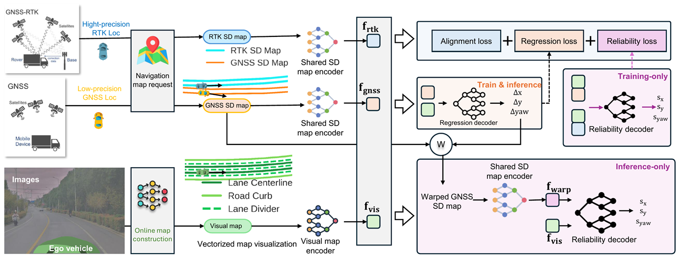
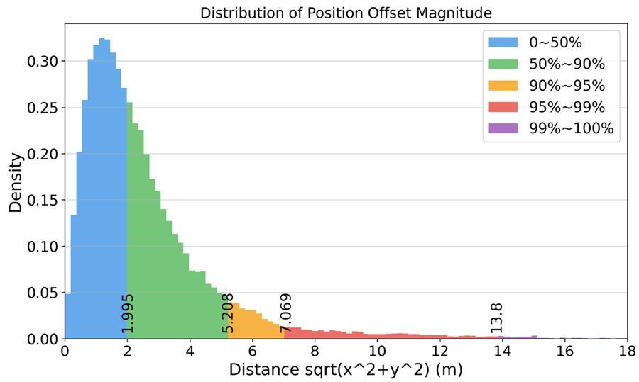
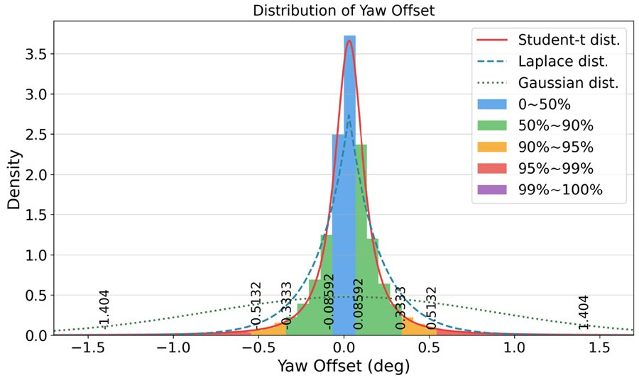
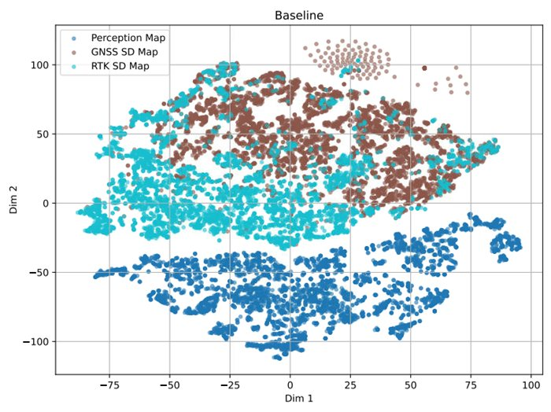
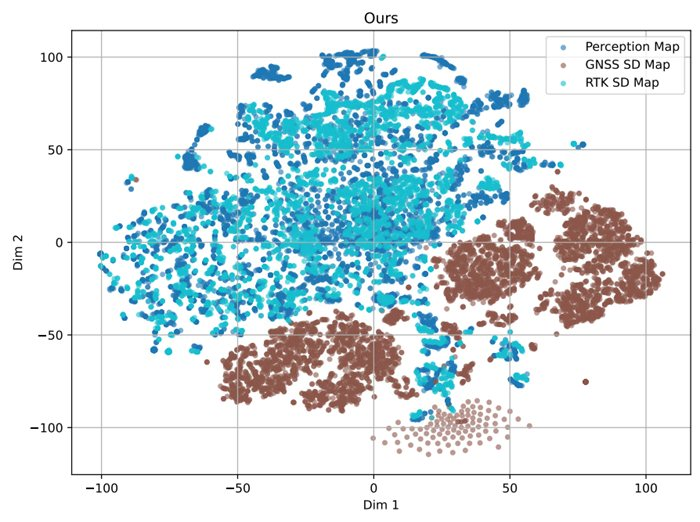
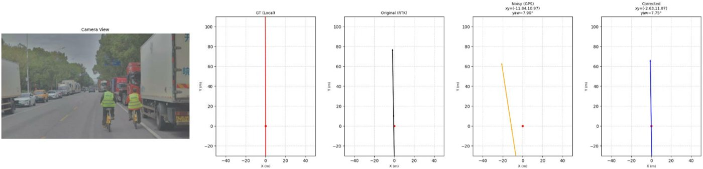
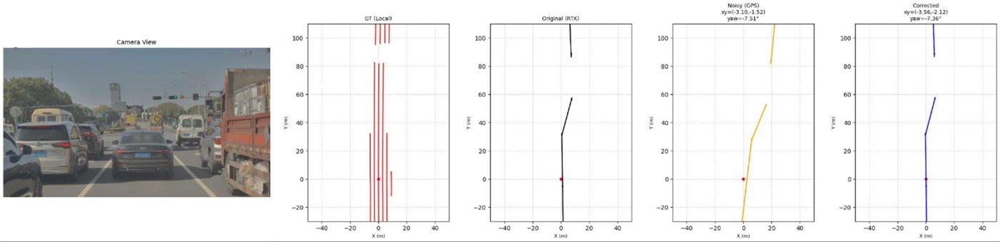

VectorReLoc: Reliable Vectorized SD Map Visual Re-localization with Contrastive Feature Alignment

Abstract
Standard-definition (SD) maps are widely used in autonomous driving, but accurate ego-centric SD map retrieval typically relies on costly RTK-GNSS joint localization. In contrast, low-cost GNSS introduces meter-level 3-DoF pose offsets with high variance, yielding misaligned local maps that can degrade downstream planning and control. Prior visual re-localization methods mostly rely on dense rasterized BEV representations, which are computation-heavy and easily distracted by scene content irrelevant to road geometry.
We propose VectorReLoc, the first sparse re-localization framework that directly aligns vectorized SD maps with online-constructed vectorized visual maps to estimate the 3-DoF pose offset. VectorReLoc further introduces a feature alignment objective that structures the embedding space for accurate offset regression, together with a reliability predictor to identify potentially unreliable corrections and mitigate silent failures. To enable realistic training and evaluation, we additionally present a large-scale dataset with paired RTK-retrieved and GNSS-retrieved SD maps, providing real pose-offset labels rather than the simulated noise used in prior work. Experiments on public benchmarks and the proposed dataset demonstrate improved accuracy, robustness and efficiency over previous approaches.
Contributions
- Sparse vectorized re-localization. The first SD map visual re-localization method that bypasses dense BEV grids and operates directly on vectorized map representations, achieving the best accuracy at significantly reduced computational cost.
- Contrastive map feature alignment. A bidirectional InfoNCE objective with a per-sample margin loss that explicitly structures the embedding space for reliable offset regression.
- Reliability prediction. A per-dimension confidence scoring module; filtered reliable samples show higher recall and lower error, letting downstream modules selectively accept corrections.
- New dataset and benchmark. A large-scale dataset with paired real RTK-GNSS and low-cost GNSS SD maps, plus the GNSS Offset Distribution Hypothesis: real GNSS offsets are heavy-tailed and well captured by Student-t distributions rather than Gaussian noise.
VectorReLoc Dataset
Roughly 6,534 scenes and 170,533 frames recorded at 1 Hz across Shanghai, Jiangsu and Anhui, covering urban, suburban, highway, night and rain conditions. Each frame provides 8 surround-view images at 1024×768, low-cost GNSS/IMU measurements, dual RTK poses and the corresponding SD maps from a commercial map provider. Unlike prior benchmarks that perturb a reference trajectory with artificial noise, every offset label here comes from real paired RTK and low-cost GNSS retrievals.
| Dataset | Scenes | Frames | Freq. | RTK-GNSS loc. | GNSS loc. |
|---|---|---|---|---|---|
| nuScenes | ~1,000 | 40,157 | 2 Hz | ✗ | ✓ |
| Argoverse2 | ~850 | 27,000 | 2 Hz | ✗ | ✓ |
| VectorReLoc (ours) | 6,534 | 170,533 | 1 Hz | ✓ | ✓ |


Contrastive Feature Alignment
The visual map is built under the true vehicle pose while the SD map is queried under an inaccurate GNSS pose. A well-behaved embedding space therefore requires the visual-map feature to align with the RTK SD-map feature, while the GNSS SD-map feature is pushed away from both. Plain regression does not enforce this geometry in the common small-offset regime, so we optimise a bidirectional InfoNCE loss with a per-sample margin term jointly with the regression loss.


Qualitative Results
- Ground-truth local visual map
- Ground-truth RTK SD map
- GNSS-retrieved SD map (before correction)
- VectorReLoc-corrected SD map


BibTeX
BibTeX
@inproceedings{vectorreloc-eccv-2026,
title = {VectorReLoc: Reliable Vectorized SD Map Visual Re-localization with Contrastive Feature Alignment},
author = {Liu, Ziming and Xiang, Quanjie and Wang, Yun and Wang, Yiting and Chao, Wen and Xu, Zhuanjian and Wang, Leichen and Sun, Hao and Gao, Guangyu},
booktitle = {European Conference on Computer Vision (ECCV)},
year = {2026}
}Acknowledgements
Supported by the National Natural Science Foundation of China (Grant No. 62472033) and the Beijing Natural Science Foundation (Grant No. L2607023), and by the Bosch High Performance Computing Cluster.